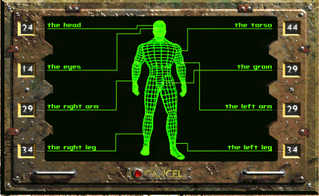

About Fallout 2
Fallout 2: A Post-Nuclear single player Role Playing Game is the sequel to the original Fallout. Published by Interplay Entertainment and released on September 30, 1998, it was officially developed by Black Isle Studios.
The game takes place in the year 2241 on the West Coast of what used to be the United States, mostly in California and Nevada.
Story
During 2241, the humble village of Arroyo suffered the worst drought on record. Faced with this hardship, the village elder asked the direct descendant of the Vault Dweller, referred to as the Chosen One, to perform the quest of retrieving a Garden of Eden Creation Kit (G.E.C.K) for Arroyo.
The GECK is a device that can create thriving communities out of the post-apocalyptic wasteland. The player, assuming the role of the Chosen One, is given nothing more than the Vault Dweller's jumpsuit, a RobCo Pip-Boy 2000 handheld device, a Vault 13 water flask, and some cash to start this quest.|
The player eventually finds Vault 13 (the first place possible to obtain a GECK) devoid of the majority of its former human inhabitants. The Chosen One returns to find his village captured by the Enclave, a mysterious group which is later revealed to be the remnants of the pre-War United States federal government. The player, through a variety of means, activates an ancient oil tanker and its autopilot, thus allowing him to reach the Enclave's main base on an offshore oil rig.
Gameplay
Fallout 2 is a role-playing open world video game. The player is free to move at will until they enter into combat. Combat gives them a number of action points to move, fire, check their equipment, reload and the like. When a player uses up all of their action points, they end their turn and enemies start theirs. If the player survives unharmed, he or she has their action points restored. Injuries and poisons can reduce the number of action points available both in a single term and semi-permanently until combat ends and the player can be treated.|
Combat and completion of jobs or quests rewards the player with experience points with which they can level up their characters and apply beneficial perks to become more suited to the dangerous post-apocalyptic world. General gameplay consists of traveling and interacting with local inhabitants and organizations to complete goals and aid or inhibit the NPCs. Mature themes such as alcohol consumption, drug usage and sex are present.Fallout 2 uses a character creation system called SPECIAL. S.P.E.C.I.A.L is an acronym and initialism of Strength, Perception, Endurance, Charisma, Intelligence, Agility, and Luck. These are the seven basic attributes of every character in the game. They are used to determine the skills and perks of the given character.|
Skills TOP
There are 18 different skills in the game. They are ranked from 0% to 300%. Starting values for those skills at level one are determined by the character's seven basic attributes, but most of those skills would fall between 0% and 50%. Every time a level is gained, the player will be awarded skill points to be used to improve their character's skills, equal to five points plus twice their Intelligence.
Skills are:- Six combat skills: Small Guns, Big Guns, Energy Weapons, Unarmed, Melee Weapons, Throwing Weapons.
- Eight active skills: First Aid, Doctor, Sneak, Lockpick, Steal, Traps, Science, Repair.
- Four passive skills: Speech, Barter, Gambling, Outdoorsman.|
Combat skills improve accuracy and (generally) damage with weapons which correspond to that combat skill. For example, the effectiveness of a minigun would be governed by the Big Guns skill, while the effectiveness of a 10mm pistol would be governed by the Small Guns skill.Active skills may be selected and used on the player, non-player characters, and the environment to accomplish tasks. For example, a player may use First Aid to heal themselves or allies, or use Repair to fix a generator.
Active skills can also contribute to in-game dialogue. For example, someone with a high Science skill could talk to a scientist and get a better response out of them than if they had a low science skill. Passive skills also contribute to in-game dialogue, along with various other things throughout the game.However, they can't ever be selected and used like active skills can.|